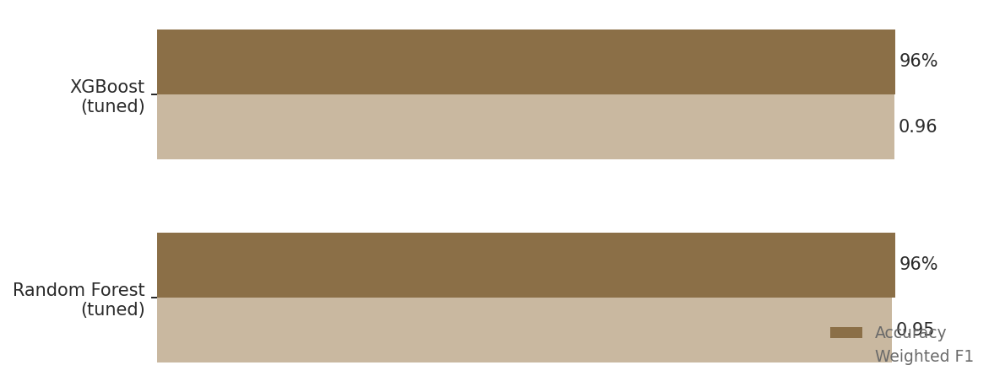
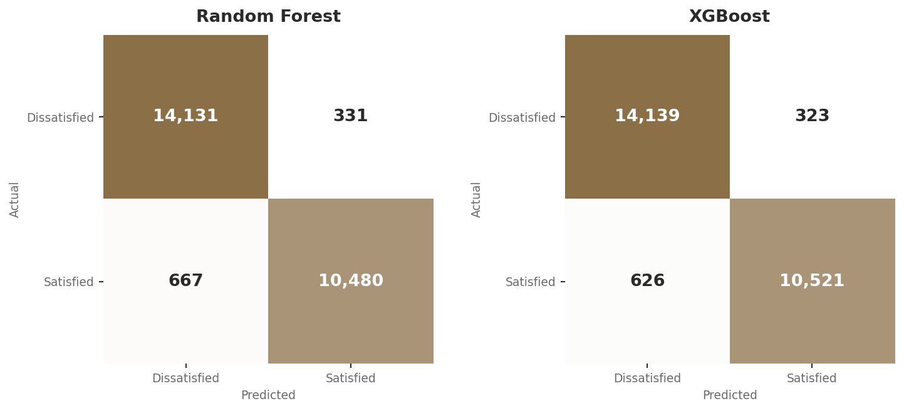

A Machine Learning Classification Analysis of 130,000 Airline Passengers
A Data Analytics Portfolio Project | July 2026
Classification accuracy predicting passenger satisfaction using a tuned XGBoost model

Project Overview
A 60 second overview before the full report.
96%
accuracy from tuned XGBoost model
After GridSearchCV hyperparameter tuning, XGBoost slightly outperformed Random Forest with fewer false positives (323 vs. 331) and fewer false negatives (626 vs. 667) on the held-out test set.
130K
passenger records analyzed
25 features spanning demographics, flight details, delay times, and 14 individual service quality ratings (WiFi, seat comfort, boarding, cleanliness, and more).
2
ensemble models tuned and compared
Random Forest and XGBoost, each optimized across a 27-combination hyperparameter grid with 3-fold cross-validation, totaling 486 model fits.
Approach
Cleaned and preprocessed 130,000 passenger survey records (outlier removal, missing value imputation, categorical encoding, feature scaling), then trained and hyperparameter-tuned Random Forest and XGBoost classifiers using stratified train-test splitting to preserve class balance.
Tools & Context
Built as part of a graduate-level data science coursework portfolio, with an automated PDF reporting pipeline for stakeholder-ready output.
Airline passenger satisfaction is one of the most consequential metrics an airline can track: it shapes repeat business, brand reputation, and customer lifetime value in an industry with notoriously thin margins. But satisfaction is shaped by dozens of interacting factors, from seat comfort to boarding process to flight delays, making it difficult to know where to focus improvement efforts without a data-driven approach.
This project analyzes a survey of 129,880 airline passengers to build a classification model that predicts whether a passenger will report themselves as satisfied or neutral/dissatisfied based on their demographic profile, flight details, and service experience ratings. The goal was twofold: build the most accurate predictive model possible, and demonstrate a complete, production-style machine learning workflow from raw data to a stakeholder-ready report.
The dataset includes 25 features per passenger, covering demographics (age, gender, customer type), flight details (travel class, distance, type of travel), delay times, and 14 individual service ratings on a 0-5 scale covering everything from inflight WiFi to baggage handling to cleanliness.
Survey data is rarely analysis-ready out of the box, and this dataset was no exception. The raw data included unnecessary index columns, missing values scattered across both numeric and categorical fields, and a small number of extreme outliers in the flight delay columns that could have skewed model training.
The preprocessing pipeline addressed each of these issues systematically:
Two ensemble learning algorithms were selected for this task: Random Forest, which builds many decision trees and averages their predictions, and XGBoost, a gradient boosting framework that builds trees sequentially, with each new tree correcting the errors of the ones before it. Both are strong choices for structured, tabular data like this survey dataset.
Rather than using default settings, both models were tuned using GridSearchCV with 3-fold cross-validation, systematically testing 27 hyperparameter combinations per model (81 fits each, 162 total):
The best-performing configurations were 100 trees with unrestricted depth for Random Forest, and 200 trees with a learning rate of 0.1 and max depth of 9 for XGBoost.

On a held-out test set of 25,609 passengers the model had never seen during training, the tuned XGBoost model correctly classified 96% of passengers as satisfied or dissatisfied, with balanced precision and recall across both classes (0.97 precision / 0.94 recall for satisfied passengers). Random Forest performed nearly identically, trailing XGBoost by only a handful of misclassifications out of over 25,000 predictions. This kind of accuracy on real survey data, rather than a clean textbook dataset, reflects both the quality of the underlying signal in service ratings and the value of systematic hyperparameter tuning over default model settings.
A 96% accurate satisfaction classifier is more than an academic exercise. In practice, a model like this could be used to flag at-risk passengers in near real time based on their trip characteristics and in-flight service delivery, allowing an airline to intervene proactively (through service recovery gestures, loyalty outreach, or targeted follow-up) rather than only learning about dissatisfaction after the fact through churn or negative reviews.
Because the underlying model also exposes which features most influence its predictions, this type of analysis can help airlines prioritize operational investment: is it more valuable to reduce delays, improve boarding processes, or upgrade inflight entertainment? Quantifying passenger experience this precisely turns a subjective question into a data-driven resource allocation decision.
Like all analyses, this project has limitations worth understanding when interpreting the findings:
The satisfaction label comes from passenger self-report on a survey, not from a downstream business outcome like rebooking or churn. Self-reported satisfaction is a reasonable proxy, but it is not a perfect substitute for actual customer retention behavior.
While the model achieves strong predictive accuracy, this analysis focused on classification performance rather than explaining which individual features (delays, specific service ratings, travel class) drive predictions most strongly. A feature importance or SHAP-based analysis would be a natural next step to translate this model into specific operational recommendations.
The dataset represents a snapshot of passenger experience rather than a longitudinal view. Satisfaction drivers can shift over time (e.g., after service changes or pricing changes), so a production version of this model would benefit from periodic retraining on fresh data.
Starting from a raw 130,000-row passenger survey with missing values, outliers, and mixed data types, a systematic preprocessing and hyperparameter tuning pipeline produced a model that correctly predicts passenger satisfaction 96% of the time. XGBoost narrowly outperformed Random Forest, but both ensemble approaches proved highly effective on this structured, tabular dataset.
The specific accuracy number is only part of the story. Equally important is the reproducible pipeline behind it: documented preprocessing decisions, systematic (rather than manual) hyperparameter search, stratified evaluation to avoid misleading results from class imbalance, and automated reporting so results can be communicated to non-technical stakeholders without re-running code.
129,880 airline passenger survey records with 25 features spanning demographics (Gender, Age, Customer Type), flight details (Type of Travel, Class, Flight Distance), delay times (Departure and Arrival Delay in Minutes), 14 individual service quality ratings (0-5 scale, covering WiFi, boarding, seat comfort, entertainment, cleanliness, and more), and the target label (satisfied vs. neutral/dissatisfied).
All data processing and modeling was conducted in Python using pandas, scikit-learn, and XGBoost, structured as a three-part pipeline:
Random Forest — n_estimators: [50, 100, 200], max_depth: [10, 20, None], min_samples_split: [2, 5, 10]
XGBoost — n_estimators: [50, 100, 200], learning_rate: [0.01, 0.1, 0.2], max_depth: [3, 6, 9]
Both grids were searched using GridSearchCV with 3-fold cross-validation, scored on accuracy, totaling 81 fits per model (162 total).
| Model | Accuracy | Precision (Satisfied) | Recall (Satisfied) | F1 |
|---|---|---|---|---|
| Random Forest (tuned) | 96% | 0.97 | 0.94 | 0.95 |
| XGBoost (tuned) | 96% | 0.97 | 0.94 | 0.96 |
Results were compiled into an automated one-page PDF report (classification metrics and confusion matrix visualizations for both models), generated programmatically rather than assembled by hand, to support quick sharing with non-technical stakeholders.